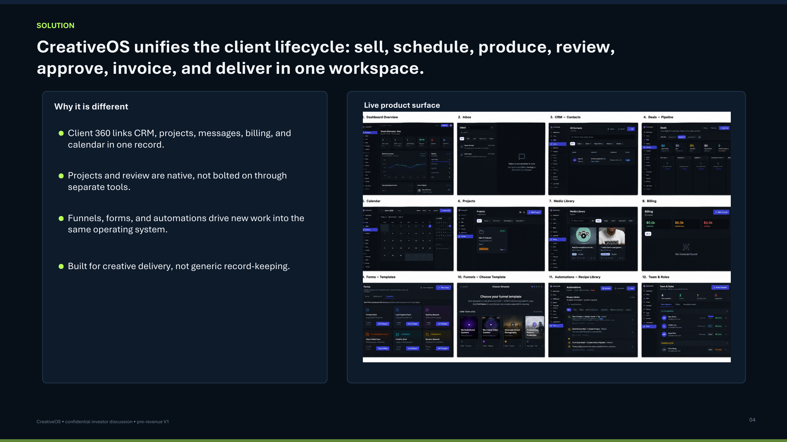
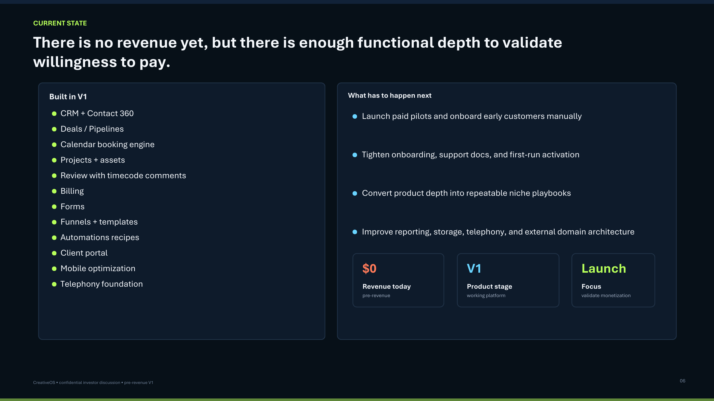
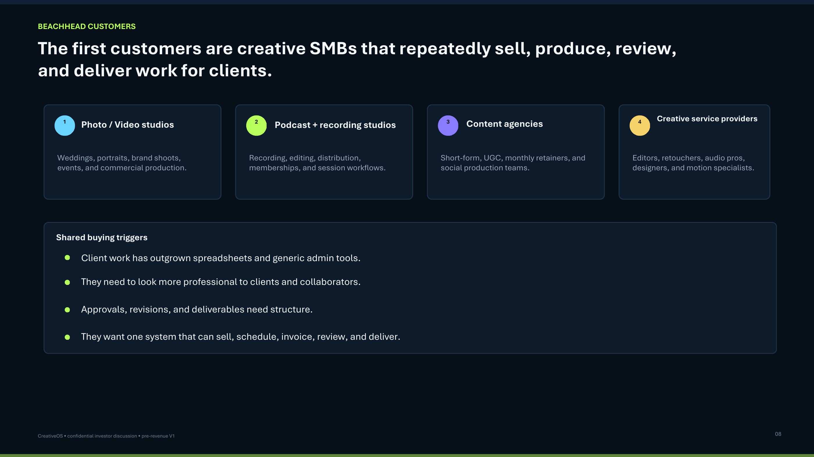
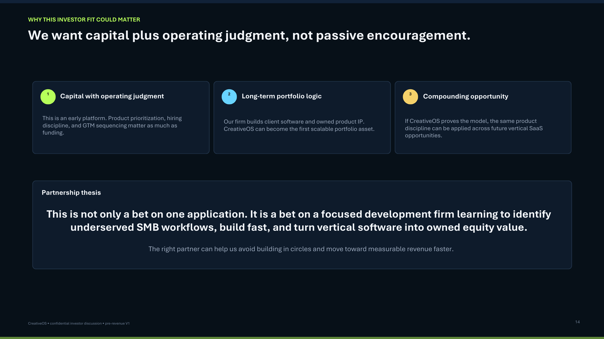

Qualified pipeline
$84.2k 12 open creative opportunities01 / 18
Creative OS replaces 7-10 disconnected tools with one operating system for creative client work.
CRM, projects, review, approvals, scheduling, billing, and client communication in one workflow-native platform.
Pre-revenue V1
Paid pilots next
Creative SMB wedge
Create 13 Group / Creative OS
Preliminary workflow demo
Create 13 Group
Pipeline command center
Sell new creative work
Lead captured 4m ago
Current workspace
Next milestones
3 client actions- Approve estimate
- Pick shoot date
- Pay deposit
Deposits ready
$18.4k 4 invoices can be triggeredClient activity
- Acme StudioViewed proposal
- NorthlineRequested date change
- Pulse Co.Approved deposit terms
Revenue momentum
$18,240
Next
Executive Summary
02 / 18
A working V1 is ready to become a paid pilot motion.
Creative OS has enough product depth to test the most important questions now: willingness to pay, retention, repeated usage, and the narrowest repeatable vertical workflow.
Investor thesis
Creative service businesses are already operating like small agencies, but their tools are stitched together from horizontal apps. Creative OS starts with one painful lifecycle and expands from workflow depth.
Capital use
Seeking strategic capital and operating guidance to recruit paid pilots, harden the product surface, validate monetization, and convert usage into repeatable GTM.
03 / 18
Creative teams lose margin when client work lives across scattered tools.
A single job can move through forms, email, CRM, calendars, boards, file sharing, review tools, invoices, and manual follow-up before it is complete.
LeadFormEmailCRMCalendar
BoardFilesReviewInvoiceFollow-up
Lost approvals
Key decisions sit inside threads and disconnected portals.
Admin-heavy production
Teams spend hours coordinating work instead of delivering it.
Weak client experience
Clients see tool sprawl instead of one confident process.
Missed follow-up
Repeat work and expansion opportunities fall through gaps.
04 / 18
Creative OS unifies the lifecycle from sell to delivery.
The product is not a bundle of features. It is a workflow-native system for moving creative client work from request to approval, invoice, delivery, and repeat business.
SellScheduleProduceReview
ApproveInvoiceDeliver
Why it is different
- Client 360 connects CRM, projects, messages, billing, and calendar.
- Review and approvals are native, not bolted on through separate tools.
- Templates and automations turn repeatable work into repeatable margin.
Market wedge
Start with photo/video studios and small content agencies, then expand into adjacent client-based creative workflows where delivery, approvals, and billing are inseparable.
05 / 18
One workflow captures the job, runs the work, and keeps the client close.
Forms and intake route new demand.
Every client record becomes operational.
Scheduling locks scope and production dates.
Work, notes, files, and status in one place.
Clients comment, request changes, and approve.
Billing follows milestones and delivery.
Clients see one controlled workspace.
Follow-up converts completed work into more work.
06 / 18
The V1 surface already covers the core creative-client operating loop.
Existing deck exports are reframed as proof of product breadth, not as static slides.




07 / 18
Current state: honest, focused, and ready for validation.
Core modules are live enough to support guided pilots.
The next proof point is paid usage, not feature volume.
Recruit a narrow cohort and measure retention quality.
Test pricing, onboarding friction, and repeated usage.
08 / 18
Creative SMBs are becoming operationally complex faster than their tools are improving.
Content demand is rising
Studios and agencies must produce more assets across more channels.
Clients expect automation
AI raises expectations for speed, updates, and polished client experience.
Horizontal tools stop short
Generic CRMs and work boards do not solve review, delivery, and approvals.
Vertical SaaS can win
Workflow context creates sharper templates, onboarding, automation, and support.
09 / 18
The first wedge should be photo/video studios and small content agencies.
These teams feel the full pain: lead capture, scheduling, production, review, approvals, billing, and delivery in one client-facing workflow.
Primary wedge
Photo/video studios and small content agencies with repeat client work and visible review cycles.
Secondary
Podcast studios
Secondary
Creative freelancers
Secondary
Retainer content teams
10 / 18
Creative OS wins by workflow depth, not by pretending every feature is unique.
| Platform | CRM | Booking | Projects | Review | Approvals | Billing | Portal | Creative native |
|---|---|---|---|---|---|---|---|---|
| HoneyBook | Yes | Yes | Partial | No | Partial | Yes | Yes | Partial |
| Dubsado | Yes | Yes | Partial | No | Partial | Yes | Yes | Partial |
| HubSpot | Yes | Partial | Partial | No | No | Partial | Partial | No |
| Monday.com | Partial | No | Yes | No | Partial | No | Partial | No |
| Notion | Partial | No | Yes | No | No | No | Partial | No |
| Frame.io | No | No | Partial | Yes | Yes | No | Yes | Yes |
| Calendly + Stripe stack | No | Yes | No | No | No | Yes | No | No |
| Creative OS | Yes | Yes | Yes | V1 | V1 | V1 | V1 | Yes |
11 / 18
A subscription core with expansion upside from workflow volume.
Pricing is a hypothesis to validate during paid pilots.
Solo operators and small studios.
Growing creative teams.
Multi-client production operations.
Advanced workflows and teams.
Upside levers
Storage, SMS/phone, templates, implementation, automations, and premium workflow support.
12 / 18
Founder-led GTM turns pilot learning into repeatable vertical playbooks.
- Recruit 10-20 paid pilotsTarget studios with visible workflow pain.
- Build niche templatesTurn repeated jobs into onboarding accelerators.
- Document playbooksConvert pilot usage into repeatable sales and support motions.
- Publish case studiesUse proof, referrals, and before/after workflow clarity.
- Expand adjacent wedgesMove into podcast studios, freelancers, and retainer teams.
13 / 18
Roadmap is milestone-driven: prove paid usage before widening scope.
Paid pilots, onboarding, billing, analytics, feedback loop.
First $10k MRR, retention tracking, onboarding automation.
Vertical templates, storage tiers, review polish, telephony.
AI assistant, marketplace, partner channels.
14 / 18
Illustrative model: narrow pilot validation creates a path to early ARR.
Assumptions are editable and should be tightened after pilot data.
Y1$0.3M
Y2$1.7M
Y3$6.3M
Supporting assumptions
- Customer count grows from pilot cohort into vertical referrals.
- ARPA increases as teams move from Pro to Studio and Scale.
- Churn and expansion placeholders remain conservative until measured.
- Paid pilot conversion becomes the primary validation signal.
15 / 18
Funding is tied to specific traction milestones.
Harden onboarding, billing, analytics, review, and pilot-critical workflows.
Recruit pilots, build vertical playbooks, and publish customer proof.
Improve reliability, storage, permissions, and operational readiness.
Support onboarding, retention learning, and feedback loops.
16 / 18
Founder-market fit should connect software shipping with creative client-work pain.
Editable placeholders: replace this section with final founder details before investor sharing.
FN
Founder Name
Background: software, product, operations, or creative-client workflow experience.
Why this team can build it: ability to ship quickly, understand client-work operations, and turn pilot learning into product depth.
17 / 18
Raising strategic capital to convert product depth into early traction.
Editable placeholders: set the exact raise amount, instrument, runway, and contact information.
Raising
$___
Instrument: SAFE / convertible note / equity
Runway: ___ months
Milestones
- Launch 10-20 paid pilots.
- Reach first $10k MRR.
- Prove retention and repeated usage.
- Harden infrastructure for real client work.
- Create repeatable vertical GTM motion.
18 / 18
Creative OS is not a bet on another generic CRM.
It is a bet that creative SMBs need a workflow-native operating system for client work.
Contact: Create13group@gmail.com